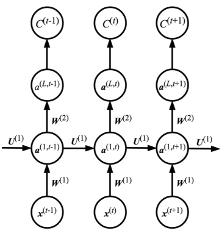
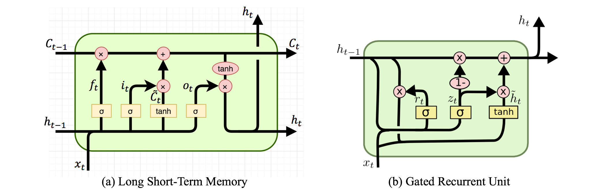
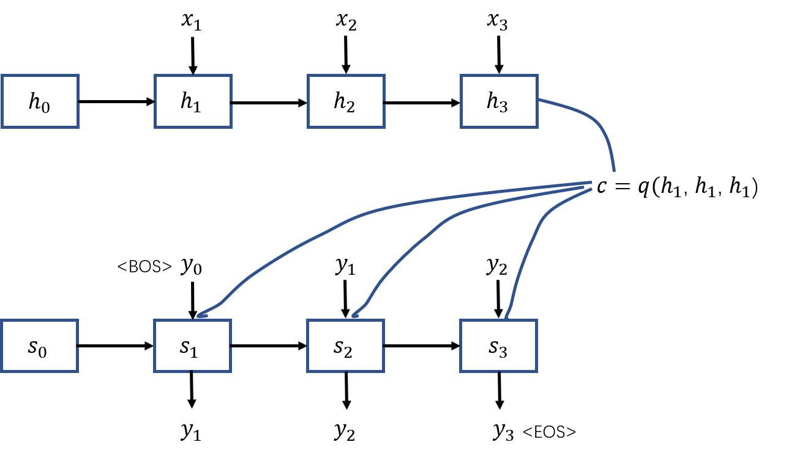
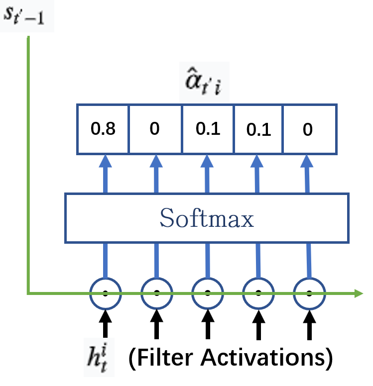
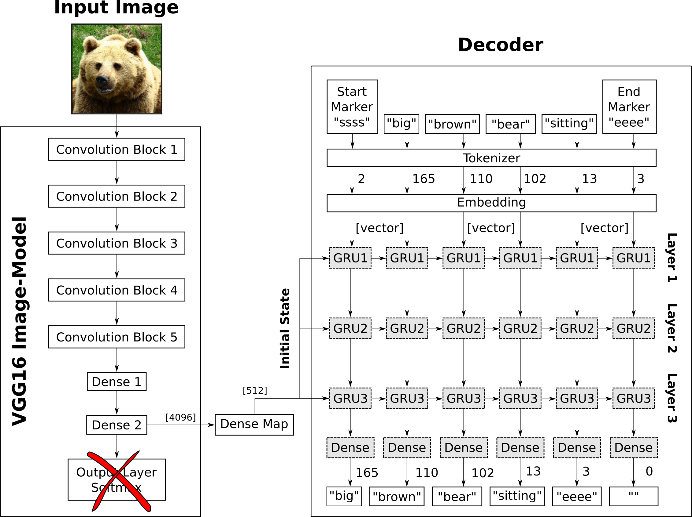

Seq2Seq-从RNN到LSTM再到Attention
Attention自2017年由Google提出至今，在seq2seq（编码解码）的任务表现出色，在NLP领域的应用也都有多项突破。我觉得attention对于深度学习将会产生深远的影响。这篇文章主要会介绍一下基于Attention的seq2seq模型和RNN base的seq2seq模型在算法上的一些区别，此外还顺便简要介绍一下LSTM和GRU算法。
RNN的编码解码 $tag$
当神经网络的输入是一串序列，输出也是一串序列，并且输入和输出序列的长度是不固定的，这样的学习任务就属于sequence2sequence模型（简称seq2seq）实际上，CNN和RNN都可以用于该任务的学习，以CNN为代表的前馈神经网络的做法是以滑动窗的方式（attention出来之前）取输入序列（17年facebook做过相关工作），而以RNN为代表的循环神经网络的做法一般来说比较主流一些，所以这里仅讨论RNN的编码解码算法。
深度学习爆红之前，NLP的常规操作是以HMM/CRF为代表的生成模型，给定一个词汇序列来预测下一个是什么，要求预测的词汇一定要最大化概率（如下式所示），基于语料库的词性和词频来分析似乎很合理；而RNN作为判别模型的代表，采用循环/递归的方式不断由前面的序列来生成下一个序列元素，其依据的也是式（1）。
上式表示序列自动生成的数学原理，下面先介绍一下RNN、LSTM和GRU的基本原理，再介绍一下基于RNN的seq2seq模型。
RNN LSTM GRU
- 传统RNN
下图表示深层RNN的模型计算过程，其中这一层在时间上进行展开，便于理解。可以看出，传统的RNN算法在预测下一个输出时，利用了前面几乎所有的输入信息，这些输入信息是通过隐藏层传递到下一个输出的。注意这里的参数和在不同的时刻是共享的。
 - LSTM和GRU
相较于传统的RNN算法，LSTM和GRU增加了一些门控机制，因为可学习控制输入/输入以及遗忘/丢弃一些信息，所以算法系统就不会完全利用序列之前的所有信息了。关于加入了门控的RNN算法，可以对比下面的计算图示以及公式：
LSTM的计算公式式中，为输入门阀，为遗忘门阀，为输出门阀，他们都为本时刻的输入和上一时刻的隐含层所决定，并且大小都在0~1之间；表示本次“计划”更新的Cell；表示本次计算得到的Cell，它由上以时刻计算得到的和本时刻计算得到的共同决定，从式中可以看出，上一时刻的可能会被遗忘，本时刻的也可能被忽略；最终得到的输出由以及输出门决定。
GRU的计算公式式中，为更新门，为重置门，式子上来看不难理解，GRU像是简化版的LSTM。
GRU最后计算公式上看有点像卡尔曼滤波，^_^
经过上面的分析，可以看出，LSTM和GRU对于序列的前后依赖关系相较于传统的RNN已经实现了一定的解耦，他们都不再是依赖所有的前序数据，而是选择可学习的部分依赖。通俗点说，就是可能会不再关注部分前序序列的内容。
基于RNN的seq2seq模型
seq2seq模型又可以被认为是编码解码过程，所以实现该模型可以利用两个RNN，一个做encoder，另外一个做decoder。假设要做的是一个中英翻译任务，模型要做的便是先利用一个RNN将输入的中文序列进行编码，得到背景词汇向量(context vector)，这里可以理解成输入语句的高维抽象；接着使用一个RNN利对来做解码产生目标翻译序列———对应的英文翻译。如下图所示，中文语句用来表示，英文翻译使用来表示，图中分别是对中文词汇进行了one-hot编码之后得到的向量，表示RNN的输出/隐含层变量，这里用表示；是由编码器隐含层变量通过一个函数得出。解码RNN/LSTM/GRU的每一个Cell的输入则是背景词汇编码，隐含层，以及对应时刻的输入。

需要说明的是，在这个例子中 和 不一定是等长的，序列的长度也不一定是3。
几个问题：
- 初始化和
图中的和分别是编码和解码器第一个输入对应的隐含层，所以需要初始化该变量，其中可以初始化为0，可以使用进行初始化，这里是考虑到翻译任务中，源语言的第一个词汇和目标语言的第一个词汇是对应的。 - 函数如何定义？
可以是直接取最后一个，也可以是对进行加权求和等等。 - 生成语句何时停止？
每一个语料库的语句的起始，终止都会添加一个特殊字符，bos和EOS分别表示语句的起始和结束，当生成的词汇为eos时则停止生成。这一点在HMM算法中也是一样的。 - 使用双向LSTM时，隐含层如何取？
当使用双向LSTM进行训练时，两个方向会分别得到forward 和backword ，那么该时刻的隐含层则可以是两者的拼接
Attention
上面说到LSTM和GRU可以理解成相对于传统的RNN对前序数据做了部分的解耦，那么attention可以说是做到了完全解耦了。下面先介绍一下attention是如何做的：
如下图所示，首先计算下一时刻要进入cell的隐含层和已经准备好的解码器隐含层的“相似度”（姑且认为是相似度好了），也可以说是对解码器隐含层的打分，打分函数可以有很多，比如对和直接做内积，或者做一个神经元：
注意这里的和是参数共享的，有利于后续的矩阵运算和并行化。
关于并行化计算也不难理解，计算attention中的打分、求背景词向量都是可以使用矩阵来计算的（即使有多个query），这一点在self-attention中非常有价值，详细介绍可以看这里。
对隐含层进行打分之后，直接做softmax，得到每一个隐含神经元的分值：

接下来，使用分数向量（score）对做加权求和就得到了该时刻需要用的背景词向量了：
实际上，这里如果对比self-attention可以发现，作为query，同时作为key和value。
此外，attention也有很多变化的版本：
self-attention,mutihead-attention,hard-attention；算法上有些微差异，想要了解更多可以查看这里。
image caption任务
“看图说话”任务学习得到的是一个seq2seq的模型，这里使用的算法为CNN-RNN，如下图所示，其实就是把上图中的编码器改成了CNN，解码器和上述是一样的，把CNN的高维特征用attetion的方式输入到解码器中则完成了attention的实际操作。啥也不说了，项目地址在这里。

此外，CNN-RNN还可以深入做一些更加有趣的事情，比如：唇语解读。
小结
- RNN和所有信息处于非解耦关系，LSTM处于部分解耦，Attention则是完全解耦；
- attention可以使用矩阵运算来实现并行化；
- 引入attention可以对深度学习机制进行部分解释。
Reference
- Vaswani, A., Shazeer, N., Parmar, N., Uszkoreit, J., Jones, L., Gomez, A. N., … & Polosukhin, I. (2017). Attention is all you need. In Advances in neural information processing systems (pp. 5998-6008).
- Gers, F. A., Schmidhuber, J., & Cummins, F. (1999). Learning to forget: Continual prediction with LSTM.
- Sutskever, I., Vinyals, O., & Le, Q. V. (2014). Sequence to sequence learning with neural networks. In Advances in neural information processing systems (pp. 3104-3112).
- Cho, K., Van Merriënboer, B., Gulcehre, C., Bahdanau, D., Bougares, F., Schwenk, H., & Bengio, Y. (2014). Learning phrase representations using RNN encoder-decoder for statistical machine translation. arXiv preprint arXiv:1406.1078.
- https://www.youtube.com/watch?v=VTXgPNmENG0&list=PLlPcwHqLqJDkVO0zHMqswX1jA9Xw7OSOK&index=7
- https://www.youtube.com/watch?v=ugWDIIOHtPA&list=PLJV_el3uVTsOK_ZK5L0Iv_EQoL1JefRL4&index=60
- https://www.youtube.com/watch?v=GQh7wDQDc0Y
- https://www.youtube.com/watch?v=uCSTpOLMC48&list=LLoCiddVQCg9ZvZoEa5d5wYw&index=9
原文作者: kiddie92
原文链接: https://kiddie92.github.io/2019/07/03/seq2seq的attention机制/
许可协议: 知识共享署名-非商业性使用4.0国际许可协议